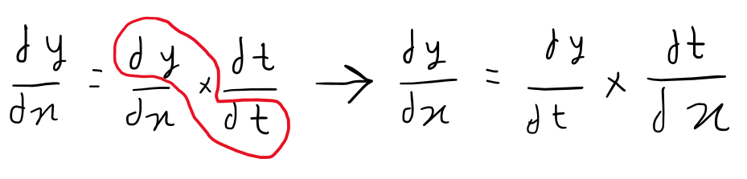

Straightforward approaches for deriving a function
Scroll to the right to see more
Scroll back to the left and scroll down to see the next topic
Sum Rule
The limit of the sum of two functions is equivalent to the total of the limits of two functions, based on the sum rule for limits. Therefore, it is essentially a power rule applied to a sum equation.
Rule:
Example:
Product Rule
According to the product rule, the derivative of the product of two functions is equal to the first function times the derivative of the second function plus the second function times the derivative of the first function.
Rule:
Example:
Quotient Rule
Based on the quotient rule, the derivative of the quotient of two functions is equal to the denominator times the derivative of the numerator minus the numerator times the derivative of the denominator, all divided by the square of the denominator.
Rule:

Example:
Chain Rule
The chain rule is a method for calculating a composite function's derivative. In other words, it's utilized when one function is contained inside another. The outer function must first be differentiated before being multiplied by the inner function's derivative in order to apply the chain rule.
The chain rule is a key idea in differential calculus and a useful tool for determining the derivative of complicated functions.
Rule:
Example: